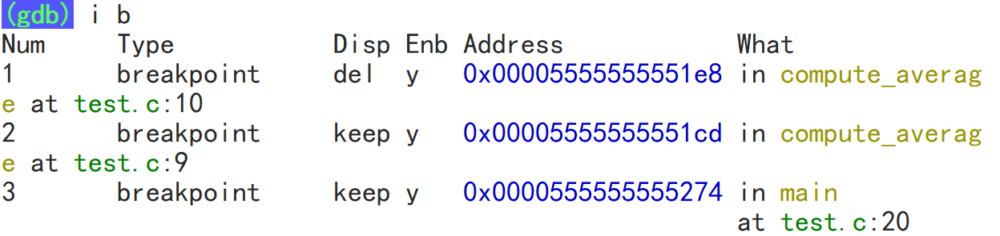

编译工具链
生成可执行程序的过程
按照细致的小过程来说，这个过程包含：预处理、编译、汇编、链接四个小过程。

预处理过程指令
1gcc -E hello.c -o hello.i # -E选项，表示激活预处理过程，生成预处理后的文件2# -E preprocess3# -o output编译过程指令
xxxxxxxxxx21gcc -S hello.i -o hello.s # —S选项，表示激活预处理和编译两个过程，会生成汇编代码文件2# -S assembly汇编过程指令
xxxxxxxxxx21gcc -c hello.s -o hello.o # -c选项，激活预处理、编译和汇编三个过程，生成目标文件 (广义上的编译)2#-c compile链接过程指令
xxxxxxxxxx31gcc hello.c # 生成可执行程序，未指定可执行程序的名称，默认生成a.out2gcc hello.c -o hello # 生成可执行程序hello3gcc hello.o main.o -o main # 将两个目标文件链接组合生成一个可执行程序不加任何选项，直接使用gcc指令，该指令可能激活预处理、编译、汇编和链接四个步骤。大多数情况下，我们都会选择使用该指令，一步到位。
gcc指令其它常用选项
-Wall添加警告信息：
xxxxxxxxxx21gcc hello.c -o hello -Wall2#-Wall warning all-O0,-O1,-O2,-O3编译器优化级别：
O --Optimization
编译器的4个优化级别，-O0表示不优化，-O1为默认值，开发时常选择，-O2为生产环境下常用的优化级别，-O3的优化级别最高。
-O3的优化手段比较激进，生产环境一般不会选择。
-g添加调试信息：
xxxxxxxxxx11gcc hello.c -o hello -gg --generate debugging information
-I选项
xxxxxxxxxx11gcc hello.c -o hello -I../headerI -Include
-I选项的作用实际上是：
改变头文件包含语法的搜索目录优先级，总是优先去搜索该选项指定的目录，搜索不到时，才按照既定的搜索的路径搜索。比如：
<>方式：表示搜索头文件时，总是先去"../header"下搜索，搜索不到时，再去操作系统头文件目录中寻找。""方式：表示搜索头文件时，总是先去"../header"下搜索，搜索不到再去当前目录"."中寻找头文件，如果还找不到再去操作系统头文件目录中寻找。
GDB调试程序
第一步：带调试信息编译代码
编译过程会去掉代码中诸如变量名这样的调试信息，从汇编代码开始这些调试信息就被替换成了内存地址。
所以要想使用GDB调试程序。首先第一步就是：使用带"-g"的指令编译生成可执行程序。
xxxxxxxxxx11gcc hello.c -o hello -g -O0 -Wall #-g为必加选项第二步：进入GDB调试界面
xxxxxxxxxx51# 第一种方式直接将可执行程序文件名作为参数2gdb 可执行程序名字3# 第二种需要先进入gdb控制台4gdb 5file 可执行程序名字 # 进入gdb控制台后再使用file指令一个最基础的指令——查看源代码
xxxxxxxxxx11list/l [文件名:][行号|函数名]xxxxxxxxxx61(gdb) l # 下翻源代码2(gdb) l - # 上翻源代码3(gdb) l 20 # 查看启动程序20行附近的源代码4(gdb) l main # 查看启动程序main函数附近的源代码5(gdb) l main.c:20 # main.c文件第20行附近的源代码6(gdb) l main.c:main # main.c文件main函数附近的源代码xxxxxxxxxx31run/r #相当于在VS中点击以Debug模式启动的按钮，一般用于结束一次调试后重启调试或者中断并重启调试2kill/k #停止当前正常调试的程序，但不会退出GDB 3quit/q #直接退出GDB，当然调试也会立刻结束第三步：打断点
xxxxxxxxxx21break/b [文件名:][行号|函数名] #在某个位置设置一个普通的、持续生效的断点2tbreak/tb [文件名:][行号|函数名] #在某个位置设置一个只生效一次的一次性断点xxxxxxxxxx41(gdb) b 20 # 在第20行设置断点2(gdb) b main # 在main函数的开头设置断点3(gdb) b main.c:20 # main.c文件的第20行设置断点4(gdb) b main.c:main # 在main.c文件的main函数开头设置断点xxxxxxxxxx11info break/i b #可以省略到只剩下i b，但空格不能省略，不能使用ib
这段信息从左往右内容是：
Num：断点的唯一性标识编号，一次Debug过程断点编号会从1开始，且不会重置一直累加。
Type：断点的类型，这里显示"breakpoint"，表示断点都只是普通断点。
Disp(Disposition，性格)：它表示断点触发后，是否会继续触发。
keep就表示它是一个持久的断点，只要不删除就一直存在，每次启动都会触发。
这个值如果是del就表示，该断点是一个一次性断点。
Enb(enable)：指示断点是否生效，可以通过
dis指令设置该属性。What：指示断点在源代码的哪个位置
xxxxxxxxxx11delete/d [n] #如果不加断点编号就是删除所有断点，若加上编号则表示删除n号断点xxxxxxxxxx21(gdb) d 2 # 删除2号断点2(gdb) d # 如果不加断点编号，则表示删除所有断点xxxxxxxxxx21disable/dis [n] #使所有断点失效/单独使n号断点失效2enable/en [n] #使所有断点生效/单独使n号断点生效GDB常用调试指令
逐语句/单步调试
xxxxxxxxxx11(gdb) step/s跳出并执行完函数
xxxxxxxxxx11(gdb) finish/fin逐过程
xxxxxxxxxx11(gdb) next/n监视窗口/查看变量取值
xxxxxxxxxx11print/p express #后面直接跟一个表达式即可，你完全把这个功能当成Linux的计算器来使用xxxxxxxxxx21(gdb) p arr[0] #输出查看当前a变量的值2(gdb) p 3.14*2*2 #作为计算器使用xxxxxxxxxx11print/p express=valxxxxxxxxxx11(gdb) p arr[0]=10如果想要持续的，展示某个表达式的值，使用格式如下：
xxxxxxxxxx31display/disp express # 每调试一步输出一次express的值2undisplay/undisp [n] # 删除所有或[n]号自动展示的表达式3info display/i disp # 显示所有自动展示的表达式信息如果需要查看所有局部变量的值，局部变量窗口，使用格式如下：
xxxxxxxxxx21(gdb) info/i args # 查看函数的参数2(gdb) info/i locals # 查看函数所有局部变量的值继续，跳过一次断点：
xxxxxxxxxx11(gdb) c #conntinue 相当于VS当中的继续功能按钮忽略断点n次
xxxxxxxxxx21ignore N COUNT2(gdb) ignore 1 10 # 忽略1号断点10次查看堆栈信息
xxxxxxxxxx11bt/backtrace #查看当前调用堆栈的信息，会一直追溯到程序启动查看内存，内存窗口
xxxxxxxxxx11x/(内存单元的个数)(内存数据的输出格式)(一个内存单元的大小) 数组名/指针/地址值...x --examine
内存数据的输出格式有：
o(octal)，八进制整数
x(hex)，十六进制整数
d(decimal)，十进制整数
u(unsigned decimal)，无符号整数
t(binary)，二进制整数
f(float)，浮点数
c(char)，字符
a(address)，地址值
c(character)：字符
s(string)，字符串
一个内存单元的大小的表示，有以下格式：
b(byte)，一个字节
h(halfword, 2 bytes)，二个字节
w(word, 4 bytes)，四个字节
g(giant, 8 bytes)，八个字节
x1# 自数组nums基地址起，每4个字节为一个内存单元，连续查看4个内存单元，以十进制整数的方式展示内存数据2(gdb) x/4dw nums3# 可能的输出结果如下所示：4# 0x7fffffffe1f0: 10 20 30 405# 也就是说此int类型的nums数组，元素取值分别是10、20、30、406
7# 自指针数组strs的基地址开始，每8个字节为一个内存单元，连续查看5个内存单元，以十六进制整数的方式展示内存数据8# 由于使用64位系统生成64位程序，8个字节即为指针的大小，所以这里实际上是查看指针数组的每一个元素地址值，即每一个字符串元素的指针9(gdb) x/5xg strs10# 可能的输出结果如下所示：11 # 0x7fffffffe210: 0x0000555555556004 0x000055555555600812 # 0x7fffffffe220: 0x000055555555600c 0x000055555555601213 # 0x7fffffffe230: 0x000055555555601614# 冒号左边都是内存地址值，右边表示此内存地址上存储的地址（指针），指向一个字符串15
16# 你可以继续查看这些指针元素，指向的字符串内容17(gdb) x/s 0x000055555555600418(gdb) x/s 0x000055555555600819# 可能的输出结果如下所示：20# 0x555555556004: "abc"21# 0x555555556008: "123"22
23# 对于字符串数组这样，需要解引用两次才能看到元素的，也可以使用下列方式来查看元素：24(gdb) x/s *strs # 查看第一个元素字符串25(gdb) x/s strs[1] # 查看第二个元素字符串26(gdb) x/s *(strs + 1) # 查看第二个元素字符串输入命令行参数
当main函数的形参列表是int argc, char *argv[]时，允许可执行程序传参命令行参数。如果想要使用GDB调试带命令行参数的可执行程序，有以下两种方式可以选择：
在启动GDB时，使用指令
gdb --args ./a.out arg1 arg2 arg3...即可表示传递命令行参数，其中a.out表示可执行程序的名字。如果已经启动了GDB，可以使用以下两种方式都可以传递命令行参数：
使用指令
set args arg1 arg2....，其中指令部分是set args，后面的部分则是参数。使用指令
run/r arg1 arg2启动，也表示传递命令行参数。
利用display，持续显示数组特定范围的取值：
xxxxxxxxxx11display/disp arr[0]@len # 持续显示数组arr从索引0开始的len个元素。观察断点：
xxxxxxxxxx11watch/wa expression # 设置一个断点，当expression的取值发生变化时，程序自动停止调试Coredump文件
Coredump 文件常用于辅助分析和 Debug，下面介绍一下这种调试手段。
xxxxxxxxxx11ulimit -a #查看当前 shell 进程的各种资源限制，比如core文件最大大小、最大打开文件数、最大用户进程数等等。ulimit --user limit
默认情况下，该指令输出的第一行就是：
core file size (blocks, -c) 0
表示此时系统允许生成的core文件最大是0个字节，即不允许生成。
所以我们需要用下列指令将core文件的大小设置为不受限制：
xxxxxxxxxx11ulimit -c unlimited # 将core文件的大小临时设置为不受限制 默认情况下，上述操作后可能还是无法生成Core文件，你可以切换到root用户或者使用sudo权限，然后补充一下core文件的配置信息到目标文件里。
具体的操作如下，先打开配置文件：
xxxxxxxxxx11sudo vim /etc/sysctl.conf # 打开配置文件，将下列信息补进去将下列信息补充到配置文件末尾（注意前面不要加#号）：
xxxxxxxxxx11kernel.core_pattern = ./core_%e_%t # %e:崩溃程序的名称, %t:崩溃时的时间戳紧跟着你还需要执行以下指令让配置信息生效：
xxxxxxxxxx11sudo sysctl -p # 让配置文件生效，但每次重启会话连接可能都需要再执行一次这段配置信息的目的是给core文件设定一个固定的格式，这样设置后，再次执行报错可执行程序就会生成core文件了。
但是要注意：一般只有段错误才会生成对应core文件，像上面数组越界引发未定义行为是没有段错误的，也就不会生成core文件。
然后你就可以用指令：
xxxxxxxxxx11gdb hello core_hello_1679196427 # gdb + 可执行文件的名字 + core文件名查看报错的一些信息，此时再利用bt等指令就可以进行正常的程序调试了。